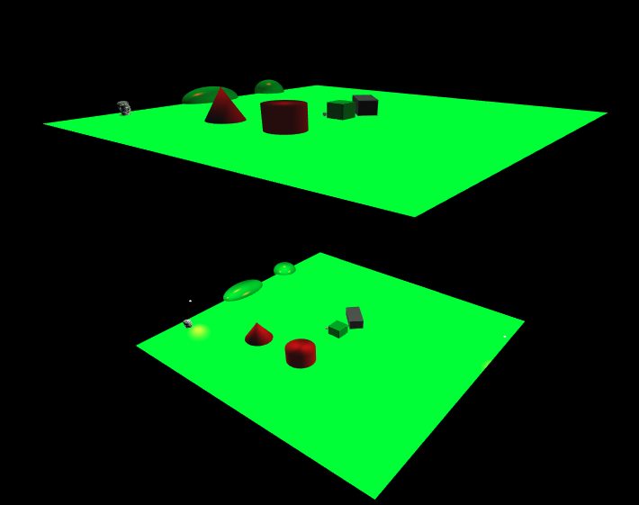
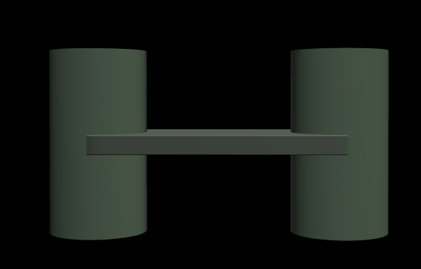
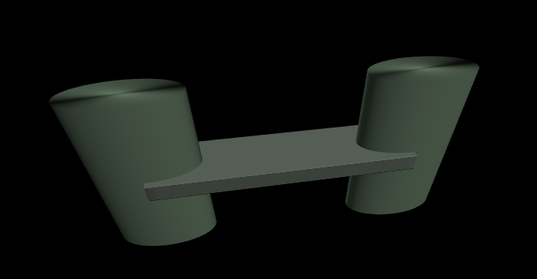

Assignment 2: Scene Trees (30 Points)
Overview
The purpose of this assignment is to familiarize students with the JSON-based scene file format we will be using in the ray tracing assignment. In particular, students will be making a variety of scenes to test their knowledge of scene trees and of 4x4 transformation matrices. The assignment will culminate in the first art contest of our class, in which students design their own scenes out of the basic building blocks that exist in the engine.
Getting Started
You will be writing a series of JSON scene files in this assignment. It is possible to everything (except for possibly the art contest) by writing and uploading your scene files to the scene viewer from the course web site. You can also use the live the scene editor to play around with things in a more interactive manner before creating your final submissions. However, for the art contest, you should open the ggslac repository in VisualStudio Code and launch the viewer, as described below:
-
Clone or download the ggslac repository, which contains an engine that Dr. Tralie made for this class, and which you will be using to render and interact with scene files.
-
Navigate to the
viewers/SceneViewer.htmlfile. This will launch the interface from which you can load your scene files.
Submission Instructions
You will submit all of your scene files and dino.js to Canvas when you are finished. Please also submit aREADME.txt file with both submissions with the following information each time:
- Your name
- One of the two statements below
- "I consent to have my art contest submission posted publicly on the class web site. My name/pseudonym for public display is .
- "I do not wish to post my art contest submission publicly"
- A one or two sentence description of your art contest submission.
- Approximately how many hours it took you to finish this assignment (I will not judge you for this at all...I am simply using it to gauge if the assignments are too easy or hard)
- Your overall impression of the assignment. Did you love it, hate it, or were you neutral? One word answers are fine, but if you have any suggestions for the future let me know.
- Any other concerns that you have.
JSON Scene File Syntax
The scene files are written in JSON syntax, and they specify a tree structure. Each node in the tree has the following three fields- transform:
Every node in the scene tree has a 4x4 transform matrix associated to it, which describes where to place it relative to its parent's coordinate system. The entire subtree will be transformed by this matrix on the left. If no matrix is provided, the identity matrix is assumed
-
shapes:
Every node can contain a set of shape objects (if this field is not specified, then there are no shapes, and this is a "dummy node"). The possible shapes, with their possible additional fields, are described below:
- box, with fields "width" (number), "height" (number), "length" (number) and "center" (list of 3 numbers xyz). The default box is 1x1x1, centered at (0, 0, 0)
- polygon, with a single field "vertices", which is a list of 3-element lists, each of which is a vertex on the polygon. Vertices are specified in CCW order with respect to the polygon normal.
- cylinder, with fields "radius" (number), "height" (number), and "center" (list of 3 numbers xyz). The default cylinder has radius 1 and height 1, centered at (0, 0, 0).
- cone, with fields "radius" (number), "height" (number), and "center" (list of 3 numbers xyz). The default cone has radius 1 and height 1, with its base centered on (0, 0, 0).
- sphere, with fields "radius" (number) and "center" (list of 3 numbers xyz). The default sphere has radius 1 and is centered at (0, 0, 0).
- mesh, with field "filename" (string), which is a path to the triangle mesh stored as a .off file. The path is relative to the directory from which the viewer is being run.
- scene, with field "filename" (string), which is a path to another JSON scene file, which should be recursively included as a child of this node. The path is relative to the directory from which the viewer is being run.
Note that each shape also has a "material" field, which points to a material defined at the top of the JSON file
-
children:
Every node can have a list of children, which is a list of other nodes that are included below it in the tree. If no list is provided, then this node doesn't have any children, and it is a "leaf node."
- Node 2 is a "dummy node," as it has no shapes associated to it; it only has a transformation (45 degree rotation about y and a translation by 2 in the +x direction). So it is merely used to transform the shapes below it, not to include any shapes of its own.
- Node 3 contains a unit cube, which it scales by 2x in the x direction to turn it into a 2x1x1 rectangular prism. To further continue up the tree to world coordinates, it is then rotated by 45 degrees about y, translated by 2 in +x, and translated by 0.5 in +y. (Note that flipping the rotation in node 2 with the scale in node 3 would actually end up shearing the shape).
- Nodes 3, 4, 5, and 6 are all "leaf nodes," as they have no children, so the tree stops there.
- Node 6 actually contains 3 shapes, but no transformation is specified, so the identity matrix is assumed for all of them. To place the shapes at different positions and to scale them in different directions, we actually rely on the shape fields (center, radius, height) instead of transformation matrices. Though one could accomplish the translation and scaling with a matrix as well.

Other Tips:
- You can format JSOn however you want, but it is recommended that you include tabs consistently to help you see what nodes are at the same depth in the tree. Basically, treat it like its own programming language and keep it readable.
- Be sure to use double quotes for all fields, as per the JSON spec! You will receive an alert popup if you have improperly formatted JSON. Microsoft Visual Studio Code with the .json extension will help catch these errors.
- I've noticed that Firefox gives more descriptive information in its console about where JSON parse errors are occurring than Chrome does. In particular, Firefox seems to give line numbers, while Chrome flattens the code to a String. So I'd recommend using Firefox in this assignment.
Scenes To Create
Below are scenes that you will create.
Task 1: Positioning Camera (2 pts)
Modify the first camera in sample.scene.json so that it is looking from overhead by default when loaded. Make it so that the cylinder and cone are to the left, the two boxes are to the right, and nothing else is in view, as shown below (no need to get it exact, but get as close as you can). Save as a file called overhead.json, which you will submit. (Hint: expand the cameras menu to see the position and rotation of the camera)
Scene 2: Recursive Inclusion (3 pts)
Create a scene file called recursive.json that recursively includes sample-scene.json twice: once at its original position, and another time at exactly 20 units above its original position. Be sure that the path to sample-scene.json is relative to where SceneViewer.html is being run! In particular, if you don't move SceneViewer.html, and/or if you use the interactive editor, then the path should be ../scenes/sample-scene.json.
In this engine, lights in recursively included scenes are ignored. Also, you can't interactively change any of the material properties of recursively included scenes. So if you use them in the art contest, you should work on them individually before you recursively include them, and you should setup lights in the parent scene file. If you've done this correctly and setup white lights at positions (0, 200, 0), (-5, 2, -10), and (5, 2, 10), then your scene should look something like this:
Scene 3: Rotated Boxes (5 pts)
Create a scene called boxes.json that contains one box directly on top of one another. The box on top should have half the width/length/height of the box on the bottom, and it should be rotated 45 degrees. The picture below shows what the final result should look like:
- The second box should be rotated about the y-axis.
Scene 4: Toy Bridge (5 pts)
Create a scene with two ellipsoidal cylinders and a rectangular box between them that looks like a simple bridge. Specifically, you should do the following- Create two cylinders with ellipsoidal cross-sections. The semi-major axis should be 0.4, and the semi-minor axis should be 0.2.
- The cylinders should each be 2 units tall, and their centers should be 2 units apart along the semi-major axis.
- You should place a box which extends from the center of one to the center of the other, and which is much thinner than it is wide.
See the picture below for two different views of this (don't worry about the colors)
Front View
Top View
Scene 5: Dino Dance Circle (10 pts)
For this task, you will programmatically setup a bunch of scene elements in a loop. You'll be aiming for a scene with 20 dinos orbiting around one dino, as shown in the animation below. Think of it as a dino dance circle / congo line of sorts:

Of course, you could manually type out each dino, but that would be very tedious, so you should make code that sets up the JSON object. To help you out, click here to download some starter code. You should edit the file dino.js, and then run the file makeDino.html to display your programmatically generated code, which you can paste into a file or into the live editor to try out. I've started you off in dino.js with the beginning of the scene, including the dino at the center and a few lights. You'll have to add to the children of the scene JSON object that I started you with using a loop. The position of the dinos in a circle can be placed in the XZ plane as
\[ x = R \cos(\theta), z = R \sin(\theta) \]
whereR is the radius of the circle. But you'll also have to do two rotations. First, you'll need to rotate about the x-axis clockwise by 90 degrees, because the dino mesh comes in facing down. After that, you'll have to rotate around the y-axis so that each dino faces the dino right in front of them in the circle.
When you're finished, please submit your dino.js to canvas.
fromTranslation, fromXRotation, and fromYRotation. Then, multiply them together with mul. Finally, use the getMat4Array method I provided to convert from a glMatrix.mat4 object into an array that can be put directly into the transformation property of a child object in the scene file.
Scene 6: Art Contest! (5 pts)
Design your own scene, making creative use of the components available to you in the engine. Hopefully the above examples have inspired you somehow! The winner of the art contest will receive 5 extra credit points. The judges will be me and the other professors in Math/CS, with the names anonymized during judging. To receive full credit, you must satisfy the following parameters:- The submission should include at least two scene files, with one included in the other
- The scene tree must have a depth of at least two somewhere (one child of a child)